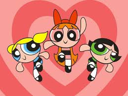

Bem-vindo ao início da sua jornada com as Meninas Super Poderosas! Você está começando sua missão para proteger Townsville. Sua primeira decisão é escolher entre melhorar suas habilidades de combate ou fortalecer sua união como equipe.
Você decide melhorar suas habilidades de combate, treinando intensamente em técnicas de luta e uso de poderes. Seus novos poderes tornam-se mais eficazes e você está pronta para enfrentar qualquer ameaça.
Você decide fortalecer a união da equipe, trabalhando em estratégias e aprendendo a colaborar melhor. Essa nova coesão faz com que o time se torne mais eficiente em enfrentar vilões juntos.
Com suas habilidades de combate aprimoradas, você enfrenta o Demônio da Neve e consegue derrotá-lo com eficácia. Townsville está segura, e sua habilidade é reconhecida por todos.
Fortalecer a união da equipe ajuda a enfrentar o Demônio da Neve de maneira muito coordenada. Vocês derrotam o vilão e a cidade de Townsville aprecia a força do trabalho em equipe.
Você recebe a Medalha de Heroína e continua a proteger Townsville com grande sucesso. Sua bravura e habilidades são admiradas por todos, e você se torna uma lenda entre os heróis.

Parabéns! Você é uma verdadeira heroína.
Receber a Medalha de Heroína após derrotar o Demônio da Neve destaca o valor do trabalho em equipe. Sua equipe se torna um exemplo para todos os heróis e continua a proteger a cidade com sucesso.
Parabéns! Sua equipe é um modelo de colaboração e heroísmo.
Você decide ajudar um cidadão em perigo, salvando-o de um acidente. Seu ato heroico demonstra a importância de estar sempre alerta e preparado para qualquer situação.
Investigar um mistério na cidade revela que há uma nova ameaça surgindo. Você consegue reunir pistas e preparar a equipe para enfrentar o novo vilão.
Após derrotar o Demônio da Neve, você e sua equipe celebram com uma grande festa. A cidade de Townsville se alegra com a vitória e aprecia o trabalho da equipe.
Organizar um evento comunitário é um grande sucesso. A cidade de Townsville se une para comemorar e reconhecer o trabalho das Meninas Super Poderosas.
Investigar a origem da ameaça revela uma nova conspiração. Sua determinação e habilidades são essenciais para desmantelar o plano maligno.
Treinar novamente melhora suas habilidades e prepara você para desafios futuros. Com suas novas habilidades, você está pronta para enfrentar qualquer ameaça que surgir.
Enfrentar o novo vilão é um desafio, mas sua equipe está bem preparada. Com estratégia e coragem, você derrota o vilão e salva Townsville mais uma vez.
Pedir ajuda a outros heróis fortalece a equipe e permite que enfrentem o novo vilão com mais eficácia. A colaboração entre heróis é um grande sucesso.
Planejar a próxima missão após a celebração mostra sua liderança e preparação para novos desafios. Você está pronta para proteger Townsville mais uma vez.
Ajudar com projetos comunitários fortalece o vínculo entre as Meninas Super Poderosas e a comunidade. Townsville está mais unida e grata pelo seu trabalho.
Enfrentar o novo vilão com a ajuda da equipe e das pistas reveladas é uma grande vitória. A cidade é salva e você é aclamada como uma heroína maior do que nunca.
Parabéns! Sua coragem e habilidade são inigualáveis.
Buscar ajuda de cientistas revela soluções inovadoras para enfrentar o novo vilão. A colaboração com especialistas aumenta suas chances de vitória.